전기공사기사 (2004-09-05 기출문제)
1과목: 전기응용 및 공사재료
1. 금속관 1본의 표준길이 [m]는?
- 6
- 5.5
- 4
- 3.6
(정답률: 69%)

2. 청색 형광 램프의 형광체는 무엇인가?
- 규산 카드뮴
- 붕산 카드
- 규산 아연
- 텅스텐산 칼슘
(정답률: 53%)
3. 2중 코일 필라멘트 사용시 그 효과는?
- 효율을 좋게 한다.
- 광색을 개선한다.
- 휘도를 줄인다.
- 배색을 개선한다.
(정답률: 76%)
4. 전기 철도용 변전소의 간격을 짧게 하는 이유는?
- 효율이 좋다.
- 절연저항을 적게한다.
- 전식이 적다.
- 건설비가 적다.
(정답률: 77%)
5. 가요 전선관 공사에 의한 저압옥내 배선에서 틀린 것은?
- 전선은 절연전선 일 것
- 1종 금속제 가요 전선관의 두께는 0.5mm 이상일 것
- 내면은 전선의 피복을 손상하지 아니하도록 매끈한 것일 것
- 가요 전선관 안에는 전선에 접속점이 없도록 할 것
(정답률: 80%)
6. 백열전구의 전광속이 1200[lm]이다, 입체각 600[sr]으로 복사되고 있을 때 광도[cd]는 얼마인가?
- 1
- 2
- 3
- 4
(정답률: 85%)
7. 간접식 저항로에 속하지 않는 것은 어느 것인가?
- 흑연화로
- 발열체로
- 탄소립로(크리프롤로)
- 염욕로
(정답률: 73%)
8. 케이블 또는 콘덴서용 절연유는 다음과 같은 성질을 가져야 한다. 틀린 것은?
- 함침시키는 온도에서 점도가 클 것
- 유전손이 적을 것
- 열전도율이 작을 것
- 팽창 계수가 작을 것
(정답률: 75%)
9. 앵글베이스(또는 U좌금)의 용도는?
- 옥외변대에 설치되는 변압기를 고정시키기 위한 부속 자재이다.
- 앵글을 절단 또는 가공할 때 필요한 앵글 가공용 공구이다.
- 완금 또는 앵글류의 지지물에 COS 또는 핀애자를 고정시키는 부속 자재이다.
- 큐비클에 부착되는 각종 계기를 고정시키는데 사용되는 아연도금 된 앵글이다.
(정답률: 67%)
10. 접지극의 재료에서 접지 전극의 재료가 아닌 것은?
- Al봉
- 동봉
- 동판
- 철관
(정답률: 75%)
11. 조명기구나 소형전기기구에 전력을 공급하는 것으로 상점이나 백화점, 전시장 등에서 조명기구의 위치를 바꾸기가 빈번한 곳에 사용되는 것은?
- 라이팅덕트
- 스포트라이트
- 다운라이트
- 코퍼라이트
(정답률: 79%)
12. 천정면을 여러 형태로 오려내고 다양한 형태의 매입기구를 취부하며, 높은 천정의 은행 영업실, 대형홀, 백화점 1층 등에 쓰이는 조명은?
- 밸런스 조명
- 코브 조명
- 루버 조명
- 코퍼 조명
(정답률: 66%)
13. 100[ℓ], 15[℃]의 물을 2시간에 45[綽]의 온도로 올리는 데 필요한 전열기의 용량은 약 몇 [kW]인가? (단, 열효율은 90[%]라 한다.)
- 2.0
- 2.5
- 3.0
- 3.5
(정답률: 73%)
14. 예비전원으로 시설하는 축전지에서 부하에 이르는 전로에 는 무엇을 시설 하여야 하는가?
- PT
- 개폐기 및 과전류차단기
- CT
- MOF
(정답률: 86%)
15. 데드 브레이크식 케이블 접속재 연결부품에서 케이블을 개폐기와 연결하는 몸체는?
- 엘보 커넥터
- 절연플러그
- 부싱 익스텐더
- 접속플러그
(정답률: 57%)
16. 기체 또는 액체 속에 고체의 입자가 분산되어 있을 경우이에 전압을 가하면 입자가 이동한다 이 현상을 무엇이라 하는가?
- 전해 연마
- 전기 영동
- 용융염 전해
- 전기 도금
(정답률: 80%)
17. 고압 차단기에 사용되는 것이 아닌 것은?
- OCB
- ABB
- VCB
- DS
(정답률: 83%)
18. 폭 20[m]의 도로 중앙에 6[m]의 높이로 간격 24[m] 마다 400[W]의 수은전구를 가설할때 조명율 0.25, 감광보상율을 1.3 이라 하면 도로면의 평균 조도[lx]는 얼마인가? (단, 400[W] 수은 전구의 전광속은 23000[lm]이다.)
- 약 18.4
- 약 9.2
- 약 4.6
- 약 46
(정답률: 66%)
19. 50[ton]의 전차가 20[Ω]의 경사를 올라가는데 필요한 견인력은 몇 [kg]인가? (단, 저항은 무시한다.)
- 100
- 150
- 1000
- 1500
(정답률: 75%)
20. IV 전선 600V 2종 비닐 절연전선은 제외)의 절연물의 최고 허용온도는?
- 60℃
- 80℃
- 90℃
- 180℃
(정답률: 53%)
2과목: 전력공학
21. 선로의 3상 단락전류는 대개 다음과 같은 식으로 구한다. 여기에서 ＩN 은 무엇인가?
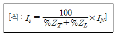
- 그 선로의 평균전류
- 그 선로의 최대전류
- 전원 변압기의 선로측 정격전류(단락측)
- 전원 변압기의 전원측 정격전류
(정답률: 9%)
22. 수력발전소의 댐을 설계하거나 저수지의 용량 등을 결정 하는데 가장 적당한 것은?
- 유량도
- 적산유량곡선
- 유황곡선
- 수위유량곡선
(정답률: 14%)
23. 영상변류기를 사용하는 계전기는?
- 과전류계전기
- 저전압계전기
- 지락과전류계전기
- 과전압계전기
(정답률: 17%)
24. 18kV, 500MVA를 정격으로 하는 발전기가 0.25 PU(perunit)의 리액턴스를 가지고 있다. 20kV, 100MVA의 새로운기준(base)에서의 리액턴스 값은 얼마인가?
- 0.25 PU
- 0.4⑤ PU
- 0.04⑤ PU
- 0.025 PU
(정답률: 8%)
25. 1상의 대지정전용량 C[F], 주파수 f[㎐]인 3상 송전선의 소호리액터 공진탭의 리액턴스는 몇 Ω 인가? (단, 소호리액터를 접속시키는 변압기의 리액턴스는Xt[Ω]이다.)
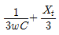
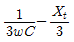
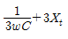
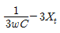
(정답률: 10%)
26. 피뢰기의 충격방전 개시전압은 무엇으로 표시하는가?
- 직류전압의 크기
- 충격파의 평균치
- 충격파의 최대치
- 충격파의 실효치
(정답률: 15%)
27. 거리계전기의 "기억작용" 이란?
- 고장 후에도 건전 전압을 잠시 유지하는 작용
- 고장 위치를 기억하는 작용
- 거리와 시간을 판별하는 작용
- 전압, 전류의 고장 전 값을 기억하는 작용
(정답률: 6%)
28. 중성점 직접접지방식에서 1선지락전류를 나타내는 식은? (단, Z1, Z2, Z0 는 정상, 역상, 영상임피던스이며, E a는 지락상의 무부하 기전력이다.)
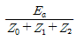
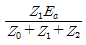
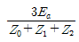
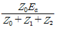
(정답률: 15%)
29. 일반회로정수가 A , B , C , D 인 선로에 임피던스가
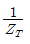
인 변압기가 수전단에 접속된 계통의 일반회로정수 D0는?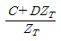
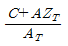
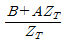
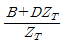
(정답률: 14%)
30. 유도장해를 방지하기 위한 전력선측의 대책으로 옳지 않은 것은?
- 소호리액터를 채용한다.
- 차폐선을 설치한다.
- 중성점 전압을 가능한 높게 한다.
- 중성점 접지에 고저항을 넣어서 지락전류를 줄인다.
(정답률: 12%)
31. 다음 중 지락사고시의 건전상의 전압 상승이 가장 작은 접지방식은?
- 소호리액터 접지식
- 고저항 접지식
- . 비접지식
- 직접접지식
(정답률: 10%)
32. 차단기의 고속도재폐로의 목적은?
- 고장의 신속한 제거
- 안정도 향상
- 기기의 보호
- 고장전류 억제
(정답률: 12%)
33. 선로정수에 영향을 가장 많이 주는 것은?
- 전선의 배치
- 송전전압
- 송전전류
- 역률
(정답률: 8%)
34. 경간 200m의 지지점이 수평인 가공전선로가 있다. 전선 1m의 하중은 2kg, 전선의 인장하중은 4000kg, 안전률을 2.5로 하면 이도는 몇 m 인가? (단, 풍압하중은 없는 것으로 한다.)
- 4.5
- 5.5
- 6.25
- 8.25
(정답률: 10%)
35. 하루에 8600kcal/kg의 석탄을 100ton 사용하여, 최대출력50000kW, 일부하율 50%로 운전하는 화력 발전소의 효율은 몇 % 인가?
- 30
- 40
- 50
- 60
(정답률: 2%)
36. 접지봉을 사용하여 희망하는 접지저항까지 줄일 수 없을 때 사용하는 선은?
- 차폐선
- 가공지선
- 크로스본드선
- 매설지선
(정답률: 9%)
37. 100V의 수용가를 220V로 승압했을 때 특별히 교체하지 않아도 되는 것은?
- 백열전등의 전구
- 옥내배선의 전선
- 콘센트와 플러그
- 형광등의 안정기
(정답률: 8%)
38. 부하전력 및 역률이 같을 때 전압을 N 배 승압하면 전압 강하율과 전력손실은 어떻게 되는가?
- 전압강하율 : 1/n, 전력손실 :1/n2
- 전압강하율 : 1/n2, 전력손실 : 1/n
- 전압강하율 : 1/n, 전력손실 : 1/n
- 전압강하율 : 1/n2, 전력손실 : 1/n2
(정답률: 10%)
39. 공통 중성선 다중접지방식의 배전선로에 있어서 Recloser[R], Sectionalizer[S], Line fuse[F]의 보호협조에서 보호협조가 가장 적합한 배열은? (단, 왼쪽은 후비보호 역할이다.)
- S-F-R
- S-R
- F-S-R
- R-S-F
(정답률: 15%)
40. 150kVA 단상변압기 3대를 △-△결선으로 사용하다가 한대의 고장으로 V-V결선하여 사용하면 약 몇 kVA 부하까지 걸 수 있겠는가?
- 200
- 220
- 240
- 260
(정답률: 10%)
3과목: 전기기기
41. 유도 전압 조정기와 관련이 없는 것은? (단, 유도 전압 조정기는 단상, 3상 모두를 말한다.)
- 위상의 연속 변화
- 분로권선
- 유도전압은 Vs=VsmSinθ
- 직렬권선
(정답률: 6%)
42. B종 절연물의 최고 허용온도는 몇 [℃]인가?
- 90
- 1⑤
- 120
- 130
(정답률: 10%)
43. 3상 동기발전기의 여자전류 10[A]에 대한 단자전압이 1000√3 [V], 3상 단락전류 50[A]이다. 이때의 동기임피던스 [Ω]는?
- 20
- 15
- 10
- 5
(정답률: 10%)
44. 3상 유도전동기의 기동법으로 사용되지 않는 것은?
- Y-△기동법
- 기동보상기법
- 2차저항에 의한 기동법
- 1차저항에 의한 기동법
(정답률: 5%)
45. 동기각속도 ω0, 회전자 각속도 ω 인 유도전동기의 2차 효율은?
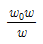
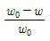
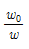
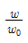
(정답률: 9%)
46. 직류기의 다중 중권 권선법에서 전기자 병렬 회로수 a와 극수p 사이에는 어떤 관계가 있는가? (단, 다중도는 m 이다.)
- a=2
- a=2m
- a=p
- a=mp
(정답률: 11%)
47. 2방향성 3단자 다이리스터는 어느 것인가?
- SCR
- SSS
- SCS
- TRIAC
(정답률: 10%)
48. 직류 직권전동기의 회전수를 반으로 줄이면 토크는 약 몇 배인가?
- 1/4
- 1/2
- 4
- 2
(정답률: 7%)
49. 단상 유도전동기의 기동 방법 중 기동 토크가 가장 큰 것은?
- 분상 기동형
- 반발 기동형
- 반발 유도형
- 콘덴서 기동형
(정답률: 11%)
50. 3상유도전동기에서 고조파 회전자계가 기본파 회전방향과 역방향인 고조파는?
- 제 3고조파
- 제 5고조파
- 제 7조파
- 제 13고조파
(정답률: 12%)
51. 3300[V], 60[Hz]용 변압기의 와류손이 360[W]이다. 이 변압기를 2750[V], 50[Hz]에서 사용할 때 이 변압기의 와류 손은 어떻게 되는가?
- 약 360 [W]
- 약 330 [W]
- 약 250 [W]
- 약 210 [W]
(정답률: 13%)
52. 변압기의 임피던스 전압이란?
- 정격전류시 2차측 단자전압
- 변압기의 1차를 단락, 1차에 1차 정격전류와 같은 전류를 흐르게 하는데 필요한 1차전압
- 변압기 누설임피던스와 정격전류와의 곱인 내부전압 강하이다.
- 변압기의 2차를 단락, 2차에 2차 정격전류와 같은 전류를 흐르게 하는데 필요한 2차전압
(정답률: 6%)
53. 도체수 Z, 내부회로대수 a 인 교류 정류자 전동기의 1 내부 회로의 유효권수 We 는? (단, 분포권 계수는 2/π 이다.)
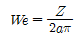
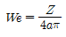
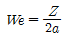
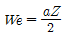
(정답률: 7%)
54. 동기 전동기에 관한 설명 중 옳지 않은 것은?
- 기동 토크가 작다.
- 유도 전동기에 비해 효율이 양호하다.
- 여자기가 필요하다.
- 역률을 조정할 수 없으며, 속도는 불변이다.
(정답률: 19%)
55. 급, 배수 펌프 등의 수조 수위를 자동 운전시키는 경우에 적절한 동력용 제어기기는?
- 레벨 스위치
- 리밋 스위치
- 마이크로 스위치
- 트리거 스위치
(정답률: 11%)
56. 변압기의 와전류손은 Pe=σe (tfkfBm)2[w/㎏]으로 표시 된다. 여기서 σe 는 재료에 의한 상수, t 는 철판의 두께[m], f는 주파수 [㎐]이다. 그러면 Kf는 무엇을 가리키는가?
- 파고율
- 왜형율
- 저항율
- 파형율
(정답률: 3%)
57. 그림과 같은 정류회로에서 전류계의 지시값은? (단, 전류계는 가동코일형이고 정류기 저항은 무시한다.)
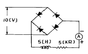
- 1.8[mA]
- 4.5[mA]
- 6.4[mA]
- 9.0[mA]
(정답률: 10%)
58. 동기기의 제동 권선의 효용은?
- 전압 조정
- 역률 개선
- 출력 증가
- 난조 방지
(정답률: 12%)
59. 정격전압 400[V], 정격출력 40[kW]의 직류 분권 발전기의 전기자 저항 0.15[Ω ], 분권계자 저항 100[Ω ]이다. 이발전기의 전압 변동률은 몇 [%]인가?
- 4.7
- 3.9
- 5.2
- 3.0
(정답률: 6%)
60. 3상 유도 전동기의 회전방향은 이 전동기에서 발생되는 회전 자계의 회전 방향과 어떤 관계가 있는가?
- 아무 관계도 없다.
- 회전 자계의 회전 방향으로 회전한다.
- 회전 자계의 반대 방향으로 회전한다.
- 부하 조건에 따라 정해진다.
(정답률: 7%)
4과목: 회로이론 및 제어공학
61. 그림과 같은 제어계가 안정하기 위한 K의 범위는?
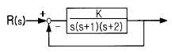
- K<-2
- K>6
- 0<K<6
- K>6, K>0
(정답률: 11%)
62. 회로에서 7[Ω]의 저항 양단의 전압은 몇 [V]인가?
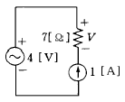
- 7
- -7
- 4
- -4
(정답률: 10%)
63. 4단자망의 파라미터 정수에 관한 서술 중 잘못된 것은?
- ABCD 파라미터 중 A 및 D 는 차원(dimension)이 없다.
- h 파라미터 중 h12및 h21은 차원이 없다.
- ABCD 파라미터 중 B는 어드미턴스, C는 임피던스의 차원을 갖는다.
- h 파라미터 중 h11은 임피던스, h22는 어드미턴스의 차원을 갖는다.
(정답률: 13%)
64. 그림의 회로에서 합성 인덕턴스는?
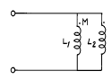
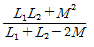
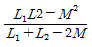
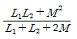
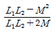
(정답률: 10%)
65. 제어량에서 추종제어에 속하지 않는 것은?
- 유량
- 위치
- 방위
- 자세
(정답률: 10%)
66. 그림과 같은 논리회로에서 출력 F의 값은?
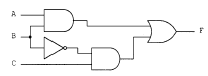
- A
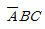
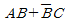
- (A+B)C
(정답률: 13%)
67. 분포전송 선로의 특성 임피던스가 50[Ω]이고 부하저항이 150[Ω]이면 전압반사 계수는?
- 2
- 1.5
- 1
- 0.5
(정답률: 11%)
68. G(jω ) = j0.1ω 에서 ω = 0.01[rad/sec] 일 때, 계의 이득[dB]은 얼마인가?
- -100
- -80
- -60
- -40
(정답률: 7%)
69. 보오드 선도에서 이득 여유는 어떻게 구하는가?
- 크기 선도에서 0-20[dB]사이에 있는 크기 선도의 길이이다.
- 위상 선도가 0° 축과 교차되는 점에 대응되는 [dB] 값의 크기이다.
- 위상 선도가 -180° 축과 교차되는 점에 대응되는 이득의 크기 [dB]값이다.
- 크기 선도에서 -20∼20[dB]사이에 있는 크기[dB] 값이다.
(정답률: 9%)
70. 세 변의 저항 Ra=Rb=Rc=15[Ω ]인 Y결선 회로가 있다. 이것과 등가인 △결선 회로의 각변의 저항[Ω ]은?
- 135
- 45
- 15
- 5
(정답률: 11%)
71. 대칭 좌표법에 관한 설명 중 잘못된 것은?
- 불평형 3상 회로의 접지식 회로에서는 영상분이 존재 한다.
- 대칭 3상 전압은 정상분만 존재 한다.
- 불평형 3상 회로 비접지식 회로에서는 영상분이 존재 한다.
- 대칭 3상 전압에서 영상분은 0 이 된다.
(정답률: 8%)
72. 루우프 전달함수 G(S)H(S)가 다음과 같이 주어지는 계가있다. 이 계가 안정되기 위한 K의 범위
- -1 < k
- k < 16.87
- 1 < k < 16.87
- -1 < k < 16.87
(정답률: 3%)
73. 궤환 제어계에서 제어 요소에 관한 설명 중 가장 알맞는 것은?
- 검출부와 조작부로 구성되어 있다.
- 오차 신호를 제어장치에서 제어 대상에 가해지는 신호로 변환시키는 요소이다.
- 목표 값에 비례하는 신호를 발생시키는 요소이다.
- 입력과 출력을 비교하는 요소이다.
(정답률: 8%)
74. 삼각파의 최대값이 220 2 [V] 일 때 이 파의 실효값의 크기[V]는?
- 220
- 203.67
- 179.63
- 168.72
(정답률: 10%)
75. 신호 x(t)가 다음과 같을 때의 Z-변환함수는? (단, 신호 x(t)는
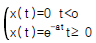
이며 이상(理想)샘플러의 샘플주기는 T[초]이다.)- (1-eaT)Z/(Z-1)(Z-e-aT)
- Z/(Z-1)
- Z/(Z-e-aT)
- TZ/(Z-1)2
(정답률: 12%)
76. 블록 다이어 그램에서θ(s)/R(s)의 전달함수는?
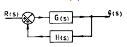
- 1/(1+GH)
- 1/(1-GH)
- G/(1+GH)
- G/(1-GH)
(정답률: 10%)
77. 상태방정식
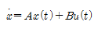
에서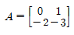
일 때 특성 방정식의 근은?- -2,-3
- -1,-2
- -1,-3
- 1,-3
(정답률: 10%)
78. 그림의 정전용량 C[F]를 충전한 후 스위치 S를 닫어 이것을 방전하는 경우의 과도 전류는? (단, 회로에는 저항이 없다.)
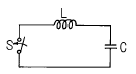
- 불변의 진동전류
- 감쇠하는 전류
- 감쇠하는 진동전류
- 일정치까지 증가하여 그후 감쇄하는 전류
(정답률: 10%)
79. 단위 계단 함수 U(t)의 라플라스 변환은?
- e-TS
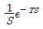
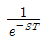
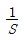
(정답률: 9%)
80. 각 상의 임피던스가
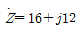
[Ω]인 평형 3상 Y부하에 정현파 상전류 10[A]가 흐를 때 이 부하의 선간전압의 크기는 약 얼마인가?- 200[V]
- 600[V]
- 220[V]
- 346[V]
(정답률: 14%)
5과목: 전기설비기술기준 및 판단기준
81. 고압 가공전선과 건조물의 상부조영재와의 옆쪽 이격거리는 일반적인 경우 몇 m 이상이어야 하는가?
- 1.0
- 1.2
- 1.5
- 1.8
(정답률: 2%)
82. 고압 지중전선이 지중 약전류전선 등과 접근하여 이격거리가 몇 cm 이하인 때에 양 전선사이에 견고한 내화성의 격벽을 설치하는 경우 이외에는 지중전선을 견고한 불연성 또는 난연성의 관에 넣어 그 관이 지중 약전류전선 등과 직접 접촉되지 않도록 하여야 하는가?
- 15
- 20
- 25
- 30
(정답률: 7%)
83. 애자사용공사에 의한 고압 옥내배선에 사용되는 연동선의 지름은 최소 몇 ㎜ 의 것을 사용하여야 하는가?
- 1.6
- 2.0
- 2.6
- 3.2
(정답률: 8%)
84. 출퇴표시등회로에 전기를 공급하기 위한 변압기는 2차측 전로의 사용전압이 몇 V 이하인 절연변압기 이어야 하는가?
- 40
- 60
- 80
- 100
(정답률: 12%)
85. 발전소의 개폐기 또는 차단기에 사용하는 압축공기장치의 주공기 탱크에 설치하는 압력계의 눈금은 어떻게 된 것으로 하여야 하는가?
- 사용압력의 1.1배 이상, 2배 이하
- 사용압력의 1.25배 이상, 2배 이하
- 사용압력의 1.5배 이상, 3배 이하
- 사용압력의 2배 이상, 3배 이하
(정답률: 6%)
86. 전력보안 통신용 전화설비를 하여야 하는 곳의 기준으로 옳은 것은?
- 2 이상의 급전소 상호간과 이들을 총합 운용하는 급전소간
- 3 이상의 급전소 상호간과 이들을 총합 운용하는 급전소간
- 원격감시제어가 되는 발전소
- 원격감시제어가 되는 변전소
(정답률: 8%)
87. 일반적인 접지공사의 방법이 잘못된 것은?
- 고압용 기계기구의 외함을 제1종 접지공사
- 특별고압 계기용 변성기의 2차측 전로에 제2종 접지공사
- 고압에서 저압으로 변성하는 변압기의 저압측 중성점을 제2종 접지공사
- 특별고압 전로와 비접지식 저압전로를 결합하는 변압기의 혼촉 방지판을 제2종 접지공사
(정답률: 6%)
88. 도로에 시설하는 가공 직류전차선의 경간은 몇 m 이하로 하여야 하는가?
- 40
- 50
- 60
- 70
(정답률: 10%)
89. 고압 가공전선에 케이블을 사용하는 경우의 조가용선 및 케이블의 피복에 사용하는 금속체에는 몇 종 접지공사를 하여야 하는가?
- 제1종 접지공사
- 제2종 접지공사
- 제3종 접지공사
- 특별 제3종 접지공사
(정답률: 12%)
90. 가공 전선로의 지지물에 취급자가 오르고 내리는데 사용 하는 발판못 등은 원칙적으로 지표상 몇 m 미만에 시설 하여서는 아니 되는가?
- 1.2
- 1.4
- 1.6
- 1.8
(정답률: 11%)
91. 지중 전선로를 직접 매설식에 의하여 시설하는 경우에 차량 기타 중량물의 압력을 받을 우려가 있는 장소에는 매설깊이를 몇 m 이상으로 하여야 하는가?(오류 신고가 접수된 문제입니다. 반드시 정답과 해설을 확인하시기 바랍니다.)
- 1.0
- 1.2
- 1.5
- 1.8
(정답률: 10%)
92. 154kV 전선로를 제1종 특별고압 보안공사로 시설할 때 경동연선의 최소 굵기는 몇 mm2 이어야 하는가?
- 55
- 100
- 150
- 200
(정답률: 12%)
93. 전압이 22900V로서 중성선에 다중접지하는 전선로의 절연 내력 시험전압은 최대사용전압의 몇 배인가?
- 0.72
- 0.92
- 1.1
- 1.25
(정답률: 12%)
94. 정격전류가 30A를 넘고 40A 이하인 과전류차단기로 보호되는 저압 옥내전로에 사용되는 콘센트의 기준으로 옳은 것은?
- 정격전류가 15A 이상 30A 이하인 것을 사용한다.
- 정격전류가 20A 이상 30A 이하인 것을 사용한다.
- 정격전류가 20A 이상 40A 이하인 것을 사용한다.
- 정격전류가 30A 이상 40A 이하인 것을 사용한다.
(정답률: 11%)
95. 내부에 고장이 생긴 경우에 자동적으로 전로로부터 차단하는 장치가 반드시 필요한 것은?
- 뱅크용량 1000kVA인 변압기
- 뱅크용량 1000kVA인 전력용콘덴서
- 뱅크용량 10000kVA인 조상기
- 뱅크용량 300kVA인 분로리액터
(정답률: 8%)
96. "제2차 접근상태" 라 함은 가공전선이 다른 시설물과 접근하는 경우에 그 가공전선이 다른 시설물의 위쪽 또는 옆쪽에서 수평거리로 몇 m 미만인 곳에 시설되는 상태를 말하는가?
- 3
- 4
- 5
- 6
(정답률: 10%)
97. 터널 등에 시설하는 사용전압이 220V인 저압의 전구선은 그 단면적이 몇 mm2 이상인가?
- 0.5
- 0.75
- 1.25
- 1.4
(정답률: 9%)
98. 한 수용 장소의 인입구에서 분기하여 지지물을 거치지 않고 다른 수용장소의 인입구에 이르는 부분을 무엇이라 하는가?
- 연접인입선
- 가공인입선
- 옥상 배선
- 옥외 배선
(정답률: 12%)
99. 전선 기타의 가섭선(架涉線) 주위에 두께 6mm, 비중 0.9의 빙설이 부착된 상태에서 을종풍압하중은 수직투영면적1m2 당 몇 ㎏f 로 계산하는가? (단, 다도체를 구성하는 전선이 아니라고 한다.)
- 38
- 46
- 52
- 72
(정답률: 4%)
100. 전개된 건조한 장소에서 400V 이상의 저압 옥내배선을 할 때 특별한 경우를 제외하고는 시행할 수 없는 공사는?
- 애자사용공사
- 금속덕트 공사
- 버스덕트공사
- 합성수지몰드공사
(정답률: 1%)